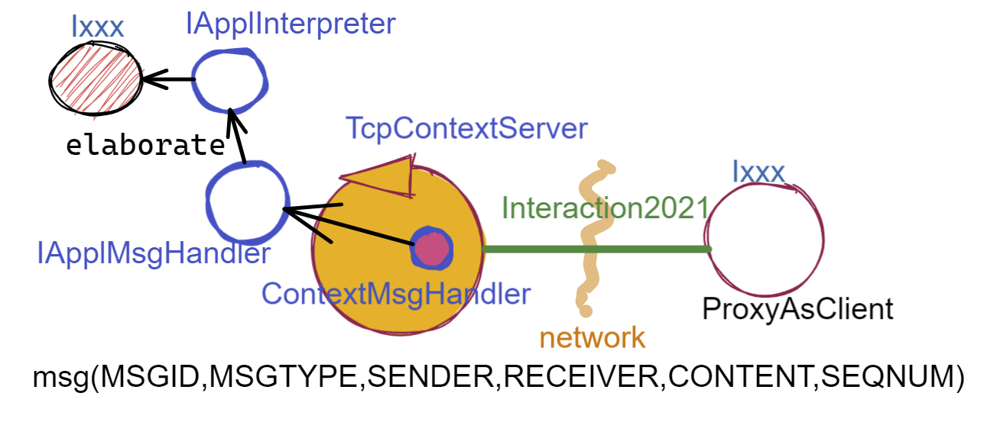
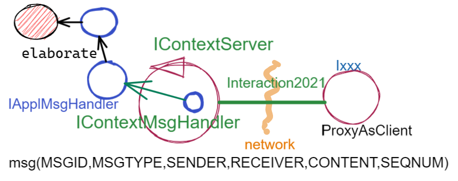

Oltre TCP¶
I primi SPRINT dello sviluppo hanno seguito un processo bottom-up, che ha fatto riferimento a TCP come protocollo per le comunicazioni di rete.
Abbiamo anche costruito un prototipo di una versione distribuita del sistema, la cui architettura è schematizzata nella figura che segue:

Con maggior dettaglio, questa architettura si basa sugli elementi costitutivi di figura:
{kind=link}
Un oggetto (POJO) di interfaccia
Ixxxche definisce il comportamento di un dispositivo reale o simulato.Un oggetto di interfaccia IApplIntepreter che trasforma messaggi (di comando e richieste di informazione) in chiamate a metodi di
Ixxx.Un oggetto di interfaccia IApplMsgHandler che definisce il codice di gestione dei messaggi di livello applicativo indirizzati a un particolare dispositivo.
Un oggetto di tipo ContextMsgHandler che realizza un gestore dei sistema dei messaggi li reindirizza (dispatching) agli opportuni handler applicativi.
Un (unico) TcpContextServer attivato su un nodo di elaborazione
A(ad esempio un Raspberry) che permette a componenti proxy allocati su nodi esterni (ad esempio un PC) di interagire con i dispositivi allocati suA. Questo componente è un TcpServer che crea un TcpApplMessageHandler per ogni connessione, il quale riceve i messaggi e chiama il ContextMsgHandler.
La domanda che ci poniamo ora è se questa organizzazione possa essere riusata nel caso in cui si voglia sostituire al protocolllo TCP un altro protocollo, tra quelli indicati in Tipi di protocollo.
Il caso
UDP: la possibilità di sostituire TCP con UDP è resa possibile dalla libreriaunibonoawtsupports.jarsviluppata in anni passati. Il compito non si è rivelato troppo difficle, visto la relativa vicinanza operazionale tra le librerie dei due protocolli.Il caso
HTTP: affronteremo l’uso di questo protocollo più avanti, in relazione alla costruzione di un componente Web GUI (se veda IssHttpSupport).
Più arduo sembra invece il caso di un protocollo di tipo publish-subscribe come MQTT o di un protocollo REST come CoAP che cambiano l’impostazione logica della interazione.
In ogni caso, dovremo costruire le nostre astrazioni utilizzando le librerie disponibili.
Liberie di riferimento¶
Come librerie di riferimento useremo le seguenti:
per MQTT: la libreria paho
per CoAP: la libreria californium
Come Broker MQTT useremo Mosquitto installato su un nostro PC (o su Raspberry) o uno dei Broker disponibili in rete:
Poichè dovremo definire un ContextServer per ogni protocollo, facciamo in modo che ciascuno di essi rispetti uno stesso contratto, con metodi per attivare/disattivare il server e per aggiungere/rimuovere componenti di tipo IApplMsgHandler:
IContext¶
public interface IContext {
public void addComponent( String name, IApplMsgHandler h);
public void removeComponent( String name );
public void activate();
public void deactivate();
}
Questo contratto è già rispettato da TcpContextServer, così che possiamo estendere la sua definizione come segue:
public class TcpContextServer extends TcpServer implements IContext
Nuovi supporti Interaction2021¶
Il TcpClientSupport crea l’implemetazione TCP di Interaction2021 introdotta a suo tempo, come oggetto di classe TcpConnection.
La creazione di analoghi supporti per MQTT e CoAP parte dalle seguenti osservazioni:
per MQTT si tratta di creare una connessione fisica con un broker che media la interazione tra mittente e destinatario e una connessione logica utilizzando le topic;
per CoAP si tratta di utilizzare un oggetto di classe
CoapClientdi californium, che richiede come argomento l’URIdella risorsa a cui ci si vuole connettere.
MqttConnection implementa Interaction2021¶
Come TcpConnection, la classe MqttConnection implementa Interaction2021
e quindi realizza il concetto di connessione tenendo conto delle seguenti caratteristiche del protocollo
MQTT e della libreria paho:
non vi è più (come in TCP) una connessione punto-a-punto con il nodo destinatario ma una connessione punto-a-punto con un Broker (il cui indirizzo sarà nel parametro di configurazione
RadarSystemConfig.mqttBrokerAddr);la connessione col Broker viene effettuata da un client di classe
org.eclipse.paho.client.mqttv3.MqttClientche deve avere un precisoclientId(di tipoString). Il Broker accetta una sola connessione per volta da un datoclientIde dunque laMqttConnectionè impostata come un singleton.
public class MqttConnection implements Interaction2021
public static final String topicInput = "topicCtxMqtt";
protected static MqttConnection mqttSup ; //for singleton
protected BlockingQueue<String> blockingQueue =
new LinkedBlockingDeque<String>(10);
protected String clientid;
//Factory method
public static synchronized MqttConnection getSupport( ){ ... }
//Get the singleton
public static MqttConnection getSupport() { return mqttSup; }
//Hidden costructor
protected MqttConnection( String clientName ) {
connectToBroker(clientName, RadarSystemConfig.mqttBrokerAddr);
}
public void connectToBroker(String clientid, String brokerAddr) {
...
client = new MqttClient(brokerAddr, clientid);
}
Il costruttore del singleton MqttConnection crea un MqttClient con clientId,
il quale si connette al Broker.
Le operazioni-base di invio e ricezione di messaggi sono correlate alle operazioni publish e
subscribe che il client è capace di eseguire.
MqttConnection publish¶
MqttConnection realizza l’invio di un messaggio invocando l’operazione publish su una topic;
public void publish(String topic, String msg, int qos, boolean retain) {
MqttMessage message = new MqttMessage();
if (qos == 0 || qos == 1 || qos == 2) {
//qos=0 fire and forget; qos=1 at least once(default);qos=2 exactly once
message.setQos(qos);
}
try {
message.setPayload(msg.toString().getBytes());
client.publish(topic, message);
} catch (MqttException e) { ... }
}
Il metodo publish viene usato per la implementazione del motodo forward dei messaggi strutturati
di tipo ApplMessage.
MqttConnection forward¶
@Override
public void forward(String msg) throws Exception {
new ApplMessage(msg); //no exception => we can publish
publish(topicInput, msg, 2, false);
}
MqttConnection subscribe¶
La ricezione di un messaggio si realizza attraverso la subscribe ad una topic; i messaggi pubblicati su
questa topic posssono essere gestiti associando (col metodo setCallback) a client un oggetto di classe
org.eclipse.paho.client.mqttv3.MqttCallback
//To receive and handle a messagge (command or request)
public void subscribe ( String topic, IApplMsgHandlerMqtt handler) {
subscribe(clientid, topic, handler);
}
protected void subscribe(
String clientid, String topic, MqttCallback callback) {
try {
client.setCallback( callback );
client.subscribe( topic );
} catch (MqttException e) { ... }
}
Poichè la gestione di un messaggio è competenza del livello applicativo, l’handler passato alla
subscribe deve rispettare un contratto imposto sia dal nostro framework sia dalla libreria.
Questo contratto viene definito da una interfaccia che estende L’interfaccia IApplMsgHandler.
IApplMsgHandlerMqtt¶
public interface IApplMsgHandlerMqtt
extends IApplMsgHandler, org.eclipse.paho.client.mqttv3.MqttCallback{}
Connessione come coppia di topic¶
Una connessione di tipo Interaction2021 viene qui realizzata usando due topic: una per ricevere messaggi e una per inviare risposte relative ai messaggi di richiesta.
Se la topic di ricezione ha nome t1, la topic per le risposte deve avere il nome t1CXanswer
ove CX è il nome del client che ha inviato una richiesta su t1.
Ad esempio, un proxyclient di nome ledPxy che usa la topic ctxEntry per inviare comandi e richieste al
ContextServer, fa una subscribe su ctxEntryledPxyanswer per ricevere le risposte.
//To receive and handle an answer
public void subscribe(String clientid, String answertopic) {
subscribe( clientid, answertopic,
new MqttConnectionCallback(client.getClientId(), blockingQueue)
);
}
Per permettere al livello applicativo di ricevere una risposta, l’handler di callback associato alla
answertopic (MqttConnectionCallback) provvede a inserire il messaggio nella blockingQueue del supporto.
MqttConnectionCallback¶
public class MqttConnectionCallback implements MqttCallback{
private BlockingQueue<String> blockingQueue = null;
public MqttConnectionCallback( BlockingQueue<String> blockingQueue ) {
this.blockingQueue = blockingQueue;
}
...
@Override
public void messageArrived(String topic, MqttMessage message) throws Exception {
if( blockingQueue != null ) blockingQueue.put( message.toString() );
}
}
MqttConnection request¶
Il metodo request di Interaction2021 viene implementato facendo una publish sulla entry-topic
del nodo destinatario per poi far attendere la risposta a un nuovo client temporaneo appositamente creato per
sottoscrivversi alla answertopic.
//To send a request and wait for the answer
@Override
public String request(String msg) throws Exception {
ApplMessage requestMsg = new ApplMessage(msg);
//Preparo per ricevere la risposta
String sender = requestMsg.msgSender();
String reqid = requestMsg.msgId();
String answerTopicName = "answ_"+reqid+"_"+sender;
MqttClient clientAnswer = setupConnectionFroAnswer(answerTopicName);
//publish(topicInput, requestMsg.toString(), 2, false); //qos=2 !
forward( requestMsg.toString() );
String answer = receiveMsg();
clientAnswer.disconnect();
clientAnswer.close();
}
Il client temporaneo viene disattivato dopo la ricezione della richiesta.
MqttConnection receiveMsg¶
Il metodo receiveMsg attende un messaggio sulla blockingQueue .
@Override
public String receiveMsg() throws Exception {
String answer = blockingQueue.take();
ApplMessage msgAnswer = new ApplMessage(answer);
answer = msgAnswer.msgContent();
return answer;
}
MqttConnection reply¶
Il metodo reply viene implementato pubblicando un messaggio di risposta su una topic, il cui nome viene costruito ai partire dai dati contenuti nel messaggio di richiesta come specificato in Connessione come coppia di topic.
public void reply(String msg) throws Exception {
try {
ApplMessage m = new ApplMessage(msg);
String dest = m.msgReceiver();
String reqid = m.msgId();
String answerTopicName = "answ_"+reqid+"_"+dest;
publish(answerTopicName,msg,2,false);
}catch(Exception e) { ... }
}
{kind=link}
CoapConnection¶
CoAP considera le interazioni (client/server) tra componenti come uno scambio di rappresentazioni di risorse
e si pone l’obiettivo di realizzare una infrastruttura di gestione di risorse remote tramite alcune semplici
funzioni di accesso e interazione come quelle di HTTP: PUT, POST, GET, DELETE.
CoapConnection implementa Interaction2021¶
La classe CoapConnection implementa Interaction2021
e quindi realizza il ‘nostro’ concetto di connessione, tenendo conto delle seguenti caratteristiche del protocollo
CoAP e della libreria californium:
per interagire con una risorsa remota si può usare un oggetto di classe
org.eclipse.californium.core.CoapClientche invia richieste all’URIspeficato come argomento del costruttore, come ad esempio:"coap://"+hostaddress + ":5683/"+ resourcePath
le risorse allocate su un nodo sono istanze della classe
org.eclipse.californium.core.CoapResourcee sono gestite da un server di classeorg.eclipse.californium.core.CoapServer. Questo server realizza già funzioni analoghe a quelle da IContext.
public class CoapConnection implements Interaction2021 {
private CoapClient client;
private String url;
public CoapConnection( String address, String path) { //"coap://localhost:5683/" + path
setCoapClient(address,path);
}
protected void setCoapClient(String address, String path) {
url = "coap://"+address + ":5683/"+ path;
client = new CoapClient( url );
client.useExecutor(); //To be shutdown
client.setTimeout( 1000L );
}
}
CoapConnection forward¶
Il metodo di invio di un messaggio si traduce in una operazione PUT effettuata dal CoapClient.
@Override
public void forward(String msg) {
CoapResponse resp=client.put(msg, MediaTypeRegistry.TEXT_PLAIN);
}
CoapConnection request¶
Il metodo di invio di una richiesta si traduce in una operazione GET effettuata dal CoapClient.
@Override
public String request( String query ) {
String param = query.isEmpty() ? "" : "?q="+query;
client.setURI(url+param);
CoapResponse respGet = client.get( );
if( respGet != null ) {
return respGet.getResponseText();
}else {
return "0";
}
}
CoapConnection receiveMsg¶
Il metodo di ricezione di un messaggio è già realizzato dalla infrastruutura CoAP fornita da californium.
@Override
public String receiveMsg() throws Exception {
throw new Exception(name + " | receiveMsg implicit");
}
CoapConnection reply¶
Il metodo di invio di una risposta è già realizzato dalla infrastruutura CoAP fornita da californium.
@Override
public String reply() throws Exception {
throw new Exception(name + " | implicit");
}
Una volta realizzati i nuovi supporti per Interaction2021, possiamo fare in modo che la classe dei Proxy crei un supporto diverso per ogni protocollo, utilizzando il tipo appropriato di connessione.
Estensione della classe ProxyAsClient¶
public class ProxyAsClient {
private Interaction2021 conn;
public ProxyAsClient(
String name, String host, String entry, ProtocolType protocol ){
...
setConnection(host, entry, protocol);
}
Il metodo setConnection invocato dal costruttore crea un supporto diverso per ogni protocollo, utilizzando
il tipo appropriato di connessione che implementa Interaction2021.
protected void setConnection( String host, String entry,
ProtocolType protocol ) throws Exception {
switch( protocol ) {
case tcp : {
int port = Integer.parseInt(entry);
int numOfAttempts = 10;
conn = TcpClientSupport.connect(host,port,numOfAttempts);
break;
}
case coap : {
conn = new CoapConnection( host,entry );//entry is uri path
break;
}
case mqtt : {
conn = MqttConnection.getSupport();
break;
}
default :{
ColorsOut.outerr(name + " | Protocol unknown");
}
}
I ContextServer¶
Dobbiamo ora introdurre un ContextServer per MQTT (che denominiamo MqttContextServer) e per CoAP (che denominiamo CoapContextServer).
Al solito, è opportuno definire una Factory per la creazione di un ContextServer in funzione del protocolllo:
Context2021¶
public class Context2021 {
public static IContext create(String id, String entry ) {
IContext ctx = null;
ProtocolType protocol = RadarSystemConfig.protcolType;
switch( protocol ) {
case tcp : {
ctx=new TcpContextServer(id, entry);
ctx.activate();
break;
}
case mqtt : {
ctx= new MqttContextServer( id, entry);
ctx.activate();
break;
}
case coap : {
ctx = new CoapContextServer( );
ctx.activate();
break;
}
default:
break;
}
return ctx;
}//create
I parametri id ed entry da specificare nel costruttore nei vari casi sono:
Server |
id |
entry |
TcpContextServer |
nome dell’host |
port |
id del client |
nome di una topic |
|
Il CoapContextServer non ha bisogno di parametri in quanto coorelato al
CoapServer di org.eclipse.californium.
IContextMsgHandler¶
Il ContextServer relativo ad un protocollo, si avvale di un gestore di sistema dei messaggi come il ContextMsgHandler.
Introduciamo anche per questo gestore un contratto che imponga la implementazione di metodi per aggiungere/rimuovere oggetti applicativi di tipo IApplMsgHandler (cosa che ContextMsgHandler fa già).
public interface IContextMsgHandler extends IApplMsgHandler{ public void addComponent( String name, IApplMsgHandler h); public void removeComponent( String name ); public IApplMsgHandler getHandler( String name ); }
L’operazione getHandler (che va ora aggiunta a ContextMsgHandler)
permette di ottenere il riferimento a un oggetto applicativo ‘registrato’ nel contesto,
dato il nome dell’oggetto.
Schema generale del framework¶
La situazione, generalizzata con le interfacce, si presenta ora come segue:
{kind=link}
Osserviamo che stiamo costruendo un framework che:
realizza una infrastruttura di comunicazione
fornisce ai componenti applicativi la capacità di intergire in rete
impone che ogni componente applicativo abbia un nome univoco
Abbiamo già introdotto TcpContextServer come implementazione di IContext che utilizza librerie per la gestione di Socket. La realizzazione di analoghi ContextServer per MQTT e CoAP si basa sulle citate nuove librerie.
MqttContextServer¶
Il ContextServer per MQTT riceve nel costruttore due argomenti:
String clientId: rappresenta l’indentificativo del client che si connetterà al Broker;String topic: rappresenta la ‘porta di ingresso’ (entry-topic) per i messaggi inviati al server.
public class MqttContextServer implements IContext{
private MqttConnection mqtt ; //Singleton
private IContextMsgHandlerMqtt ctxMsgHandler;
private String clientId;
private String topic;
public MqttContextServer(String clientId, String topic) {
this.clientId = clientId;
this.topic = topic;
}
Al momento della attivazione il server crea:
un oggetto (
mqtt) di tipo MqttConnection per le comunicazioni, che viene subito utilizzato per connettersi al Broker;un oggetto (
ctxMsgHandler) di tipo ContextMqttMsgHandler per la gestione di sistema dei messaggi.
@Override
public void activate() {
ctxMsgHandler = new ContextMqttMsgHandler("ctxH");
mqtt = MqttConnection.createSupport( clientId, topic );
mqtt.connectToBroker(clientId, RadarSystemConfig.mqttBrokerAddr);
mqtt.subscribe( topic, ctxMsgHandler );
}
@Override
public void addComponent(String name, IApplMsgHandler h) {
ctxMsgHandler.addComponent(name, h);
}
Come ContextMsgHandler, il gestore ctxMsgHandler memorizza i (riferimenti ai) componenti di
gestione applicativa dei messaggi (di tipo IApplMsgHandler).
{kind=link}
A differenza di ContextMsgHandler, il gestore ctxMsgHandler funge anche da callback
utilizzato dal supporto mqtt quando viene ricevuto un messaggio pubblicato sulla entry-topic.
Notiamo infatti che il gestore ctxMsgHandler implementa l’interfaccia
IContextMsgHandlerMqtt che estende IContextMsgHandler con IApplMsgHandlerMqtt:
IContextMsgHandlerMqtt¶
public interface IContextMsgHandlerMqtt
extends IContextMsgHandler, IApplMsgHandlerMqtt{}
ContextMqttMsgHandler¶
La rappresentazione in forma di String di un messaggio (di tipo org.eclipse.paho.client.mqttv3.MqttMessage)
ricevuto sulla entry-topic deve avere la struttura introdotta in Struttura dei messaggi applicativi:
msg(MSGID,MSGTYPE,SENDER,RECEIVER,CONTENT,SEQNUM)
Pertanto deve essere possibile eseguire il mapping della stringa in un oggetto di tipo ApplMessage,
senza generare eccezioni.
Il gestore di sistema dei messaggi realizza questo mapping nel metodo messageArrived:
public class ContextMqttMsgHandler extends ApplMsgHandler
implements IContextMsgHandlerMqtt{
@Override //from MqttCallback
public void messageArrived(String topic, MqttMessage message) {
ApplMessage msgInput = new ApplMessage(message.toString());
elaborate(msgInput, MqttConnection.getSupport());
}
L’elaborazione di sistema consiste, come nel caso di ContextMsgHandler, nella invocazione del gestore applicativo che corrisponde al nome del destinatario :
@Override
public void elaborate( ApplMessage msg, Interaction2021 conn ) {
String dest = msg.msgReceiver();
IApplMsgHandler h = handlerMap.get(dest);
h.elaborate( msg , conn);
}
@Override
public void elaborate(String message, Interaction2021 conn) {
ApplMessage msg = new ApplMessage(message);
elaborate( msg.toString(), conn);
}
@Override
public void addComponent( String devName, IApplMsgHandler h) { ... }
CoapContextServer¶
CoAP fornisce un modello di interazione ancora punto-a-punto ma, essendo di tipo
REST, il suo utilizzo implica schemi architetturali e di progettazione molto simili a quelli di applicazioni Web basate suHTTP;l’uso di CoAP modifica il modello concettuale di riferimento per le interazioni, in quanto propone l’idea di accesso in lettura (GET) o modifica (PUT) a risorse identificate da
URIattraverso un unico server (che californium offre nella classe org.eclipse.californium.core.CoapServer).
Il ContextServer del nostro framework potrà quindi essere introdotto come una specializzazione del CoapServer:
public class CoapApplServer extends CoapServer implements IContext{ ... }
le risorse CoAP sono organizzate in una gerarchia ad albero, come nell’esempio della figura che segue:

La definizione di una risorsa applicativa può essere definita come specializzazione della classe org.eclipse.californium.core.CoapResource di californium, così che noi possiamo introdurre componenti-CoAP compatibili col framework introducendo una classe astratta che specializza
CoapResource:public abstract class ApplResourceCoap extends CoapResource implements IApplMsgHandler{ ... }
Siamo dunque di fronte a un modello simile allo Schema generale del framework, ma con una forte forma di standardizzazione sia a livello di ‘verbi’ di interazione (GET/PUT/…) sia a livello di organizzazione del codice applicativo (come gerarchia di risorse).
Per utilizzare il framework con protocollo CoAP non dovremo quindi scrivere molto altro codice.
CoapApplServer¶
Il server CoapApplServer viene defiito come una estensione di CoapServer
che realizza un singleton capace di registare nuove risorse del dominio, ciascuna
intesa come un dispositivo, o di input o di output.
public class CoapApplServer extends CoapServer{
public final static String outputDeviceUri = "devices/output";
public final static String lightsDeviceUri = outputDeviceUri+"/lights";
public final static String inputDeviceUri = "devices/input";
private static CoapResource root = new CoapResource("devices");
private static CoapApplServer server = null;
public static CoapApplServer getServer() {
if( server == null ) server = new CoapApplServer();
return server;
}
public static void stopTheServer() { ... }
//Hidden constructor
private CoapApplServer(){
CoapResource outputRes= new CoapResource("output");
outputRes.add( new CoapResource("lights"));
root.add(outputRes);
root.add(new CoapResource("input"));
add( root );
start();
}
Il metodo statico getServer è un factory method che restituisce il singleton, creandolo ed
attivandolo, se già non lo fosse.
Il metodo per aggiungere risorse è così definito:
public void addCoapResource(CoapResource resource, String fatherUri){
Resource res = getResource("/"+fatherUri);
if( res != null ) res.add( resource );
}
Il metodo statico getResource restituisce (il riferimento a) una risorsa, dato il suo URI,
avvalendosi di una ricerca depth-first nell’albero delle risorse:
public static Resource getResource( String uri ) {
return getResource( root, uri );
}
private static Resource getResource(Resource root, String uri) {
if( root != null ) {
Collection<Resource> rootChilds = root.getChildren();
Iterator<Resource> iter = rootChilds.iterator();
while( iter.hasNext() ) {
Resource curRes = iter.next();
String curUri = curRes.getURI();
if( curUri.equals(uri) ){ return curRes;
}else { //explore sons
Resource subRes = getResource(curRes,uri);
if( subRes != null ) return subRes;
}
}//while
}
return null;
}
ApplResourceCoap¶
La classe astratta ApplResourceCoap è una CoapResource che realizza la gestione delle richieste GET e PUT
demandandole rispettivamente ai metodi elaborateGet ed elaboratePut di classi specializzate.
public abstract class ApplResourceCoap
extends CoapResource implements IApplMsgHandler {
protected abstract String elaborateGet(String req);
protected abstract String elaborateGet(String req, InetAddress callerAddr);
protected abstract void elaboratePut(String req);
protected abstract void elaboratePut(String req, InetAddress callerAddr);
@Override
public void handleGET(CoapExchange exchange) {
String query = exchange.getQueryParameter("q");
String answer = "";
if( query == null ) { //per observer
answer = elaborateGet(
exchange.getRequestText(),exchange.getSourceAddress());
}else{ //query != null
answer = elaborateGet(
exchange.getQueryParameter("q"), exchange.getSourceAddress() );
}
exchange.respond(answer);
}
@Override
public void handlePUT(CoapExchange exchange) {
String arg = exchange.getRequestText() ;
elaboratePut( arg, exchange.getSourceAddress() );
changed(); //IMPORTANT to notify the observers
exchange.respond(CHANGED);
}
@Override
public void handleDELETE(CoapExchange exchange) {
delete();
exchange.respond(DELETED);
}
@Override
public void handlePOST(CoapExchange exchange) {}
}
La risorsa viene creata come risorsa osservabile da un costruttore che provvede ad aggiungerla al ServerCoap, attivandolo - se già non lo fosse.
//COSTRUTTORE }
public ApplResourceCoap(String name, DeviceType dtype) {
super(name);
setObservable(true); //La risorsa è osservabile
CoapApplServer coapServer = CoapApplServer.getServer(); //SINGLETION
if( dtype==DeviceType.input )
coapServer.addCoapResource( this, CoapApplServer.inputDeviceUri);
else if( dtype==DeviceType.output )
coapServer.addCoapResource( this, CoapApplServer.outputDeviceUri);
}
}
Una risorsa per il Led¶
La risorsa CoAP per il Led è una specializzazione di ApplResourceCoap che incorpora un interpreter per il Led e ridirige a le richieste GET di lettura dello stato e i comandi PUT di attivazione/disativazione.
public class LedResourceCoap extends ApplResourceCoap {
private String curDistance="0"; //Initial state
private IApplInterpreter ledInterpr;
public LedResourceCoap(String name, IApplInterpreter ledInterpr ) {
super(name, DeviceType.output);
this.ledInterpr = ledInterpr;
}
@Override
protected String elaborateGet(String req){ return elaborateGet(req);}
@Override
protected String elaborateGet(String req) {
String answer = "";
try {
ApplMessage msg = new ApplMessage( req );
answer = ledInterpr.elaborate( msg );
}catch( Exception e) {//Unstructured req
answer = ledInterpr.elaborate( req );
}
return answer;
}
@Override
protected void elaboratePut(String req) {
String answer = "";
try {
ApplMessage msg = new ApplMessage( req );
answer = ledInterpr.elaborate( msg );
}catch( Exception e) {//Unstructured req
answer = ledInterpr.elaborate( req );
}
}
}
Una risorsa per il Sonar¶
La risorsa CoAP per il Sonar è una specializzazione di ApplResourceCoap che incorpora un Sonar, a cui ridirige le richieste GET di lettura dello stato e del valore corrente di didatnza e i comandi PUT di attivazione/disativazione.
public class SonarResourceCoap extends ApplResourceCoap {
private String curDistance="0"; //Initial state
private IApplInterpreter sonarIntrprt;
public SonarResourceCoap(String name, IApplInterpreter sonarIntrprt) {
super(name, DeviceType.input);
this.sonarIntrprt = sonarIntrprt;
}
@Override
protected String elaborateGet(String req) {
String answer = "";
if( req == null || req.isEmpty() ){//query by observers
answer = curDistance;
}
try {
ApplMessage msg = new ApplMessage( req );
answer = sonarIntrprt.elaborate( msg );
}catch( Exception e) { //Unstructured req
answer = sonarIntrprt.elaborate( req );
}
return answer;
}
@Override
protected void elaboratePut(String arg) {
String result = sonarIntrprt.elaborate(arg);
if( result.equals("activate_done")) getSonarValues();//per CoAP observers
}
@Override
protected void elaboratePut(String req, InetAddress callerAddr) {
elaboratePut(req);
}
}
In quanto produttore di dati, il Sonar modifica (metodo elaborateAndNotify) il valore corrente
curDistance della distanza misurata e notifica tutti gli observer.
protected void getSonarValues() {
new Thread() {
public void run() {
if(! sonarActive()) sonarIntrprt.elaborate("activate");
while( sonarActive() ) {
String v = sonarIntrprt.elaborate("getDistance");
elaborateAndNotify( v );
Utils.delay(RadarSystemConfig.sonarDelay);
}
}
}.start();
}
protected void elaborateAndNotify(String arg) {
curDistance = arg;
changed(); // notify all CoAP observers
}
Testing del framework¶
Per eseguire le prime prove di funzionamento del framwework, lavoriamo utilizzando il solo PC con due programmi:
RadarSystemMainDevsOnPc: crea un Led e un Sonar simulati e li rende accessibili tramite uno dei protocolli supportati dal framework (TCP, MQTT,CoAP).RadarSystemMainUasgeOnPc: utlizza il Led e il Sonar attraverso Proxy clients.
Di questi programmi riportiamo qui solo le fasi di configurazione, per evidenziare come un application designer possa costruire l’architettura del sistema.
RadarSystemMainDevsOnPc¶
Definiamo una IApplication che:
Crea i dispostivi simulati: un Sonar (osservabile) e un Led.
Crea il ContxtServer.
Crea i gestori applicativi dei messaggi rivolti ai dispositivi.
Aggiunge i dispositivi al ContxtServer dando a ciascuno un precisono nome.
Attiva l’applicazione nel monento in cui crea il ContxtServer
public class RadarSystemMainDevsOnPc implements IApplication{
private ISonar sonar;
private ILed led ;
private IContext ctx;
...
protected void configure() {
//1) CREAZIONE DEI DISPOSITIVI
if( RadarSystemConfig.sonarObservable ) {
sonar = DeviceFactory.createSonarObservable();
//Introduzione opzionale di un observer locale per il Sonar
//IObserver sonarObs = new SonarObserver( "sonarObs" ) ;
//((ISonarObservable)sonar).register( sonarObs );
}else sonar = DeviceFactory.createSonar();
led = DeviceFactory.createLed();
//2) CREAZIONE DEL ContxtServer
String id = "";
String entry = "";
switch( RadarSystemConfig.protcolType ) {
case tcp : { id="rasp";
entry=""+RadarSystemConfig.ctxServerPort; break; }
case coap : { break; }
case mqtt : { id="rasp";
entry=MqttConnection.topicInput; break; }
default:
};
ctx = Context2021.create(id,entry);
//3) CREAZIONE DEI GESTORI APPLICATIVI
IApplMsgHandler sonarHandler = SonarApplHandler.create("sonarH",sonar);
IApplMsgHandler ledHandler = LedApplHandler.create("ledH",led);
//4) AGGIUNTA DEI DISPOSITIVI AL CONTESTO
ctx.addComponent("sonar", sonarHandler); //sonar NAME mandatory
ctx.addComponent("led", ledHandler); //led NAME mandatory
}
public static void main( String[] args) throws Exception {
new RadarSystemMainDevsOnPc().doJob( null );
}
}
RadarSystemMainUsageOnPc¶
Definiamo una IApplication che:
Crea un ProxyAsClient per il Led e per il Sonar tenendo conto del protocollo.
Crea (opzionalmente) un Controller per l’applicazione RadarSystem.
Crea (opzionalmente, nel caso di CoAP) un CoAP-observer della risorsa Sonar che potrebbe realizzare le funzioni del Controller in modo data-driven
Attiva l’applicazione attivando il Sonar oppure attivando il Controller (che attiva il Sonar)
public class RadarSystemMainUasgeOnPc implements IApplication{
private ISonar sonar;
private ILed led ;
private Controller controller;
protected void configure() {
if(Utils.isCoap() ) {
serverHost = RadarSystemConfig.raspHostAddr;
String ledPath = CoapApplServer.lightsDeviceUri+"/led";
String sonarPath = CoapApplServer.inputDeviceUri+"/sonar";
//CREAZIONE DEI PROXY per CoAP
led = new LedProxyAsClient("ledPxy", serverHost, ledPath );
sonar = new SonarProxyAsClient("sonarPxy", serverHost, sonarPath );
//Introduzione di un observer CoAP per il Sonar
CoapClient client = new CoapClient(
"coap://localhost:5683/"+CoapApplServer.inputDeviceUri+"/sonar" );
//CoapObserveRelation obsrelation =
client.observe( new SonarObserverCoap("sonarObs") );
}else { //MQTT o TCP
String serverEntry = "";
if(Utils.isTcp() ) {
serverHost = RadarSystemConfig.raspHostAddr;
serverEntry = "" +RadarSystemConfig.ctxServerPort;
}
if(Utils.isMqtt() ) {
MqttConnection conn = MqttConnection.createSupport( mqttCurClient );
conn.subscribe( mqttCurClient, mqttAnswerTopic );
serverHost = RadarSystemConfig.mqttBrokerAddr; //dont'care
serverEntry = mqttAnswerTopic;
}
//CREAZIONE DEI PROXY per TCP o MQTT
led = new LedProxyAsClient("ledPxy", serverHost, serverEntry );
sonar = new SonarProxyAsClient("sonarPxy", serverHost, serverEntry );
}
//CREAZIONE DI UN Controller
controller = Controller.create( led, sonar );
//ATTIVAZIONE DEL SISTEMA
ActionFunction endFun = (n) -> { System.out.println(n); terminate(); };
controller.start(endFun, 10);
}
}
Esecuzione del sistema¶
Si pone
RadarSystemConfig.tracing = true;volendo avere dettagli sul comportamento interno.Si seleziona uno stesso protocollo in ciascuna delle due applicazioni
Si lancia
RadarSystemMainDevsOnPcche attiva il ContextServerSi lancia
RadarSystemMainUasgeOnPcche si collega al ContextServer ed opera
Il sistema distribuito¶
RadarSystemMainDevsOnRasp¶
Definiamo una IApplication che:
Crea i dispostivi reali sul RaspberryPi: un Sonar (osservabile) e un Led.
Crea il ContextServer.
Crea i gestori applicativi dei messaggi rivolti ai dispositivi.
Aggiunge i dispositivi al ContextServer, dando a ciascuno un precisono nome.
Attiva l’applicazione nel monento in cui crea il ContextServer
Questa applicazione è del tutto identica a RadarSystemMainDevsOnPc: basta fare riferimento
a un file di configurazione RadarSystemConfig.
@Override
public void setUp(String configFile) {
if( configFile != null )
RadarSystemConfig.setTheConfiguration(configFile);
else {
//Configurazione cabalata nel programma
}
}
protected void configure() { //Come in RadarSystemMainDevsOnPc
...
}
public void doJob( String configFileName ) {
setUp( configFileName );
configure();
}
public static void main( String[] args) throws Exception {
new RadarSystemMainDevsOnRasp().doJob( "RadarSystemConfig.json" );
}
File di configurazione per il RaspberryPi¶
{
"simulation" : "false",
"pcHostAddr" : "192.168.1.xxx",
"raspHostAddr" : "192.168.1.yyy",
"mqttBrokerAddr" : "tcp://broker.hivemq.com",//"tcp://test.mosquitto.org"
"withContext" : "true",
"radarGuiPort" : "8014",
"ledPort" : "8010",
"ctxServerPort" : "8018",
"sonarDelay" : "500",
"sonarDistanceMax" : "150",
"DLIMIT" : "40",
"tracing" : "false",
"serverTimeOut" : "600000",
"ControllerRemote" : "false",
"LedRemote" : "false",
"SonareRemote" : "false",
"RadarGuiRemote" : "false",
"protocolType" : "coap",
"ledGui" : "false",
"sonarPort" : "8012",
"sonarObservable" : "false",
"serverTimeOut" : "600000",
"controllerPort" : "8016",
"applStartdelay" : "3000",
"webCam" : "true",
"testing" : "false"
}
A questa applicazione possiamo fare corrispondere su PC
RadarSystemMainUasgeOnPc: una aplicazione che agisce sui dispositivi remoti usando i Proxy.RadarSystemMainEntryOnPc: una applicazione che verrà usata come componente di dominio in una applicazione Spring (si veda RadarSystemWebgui).